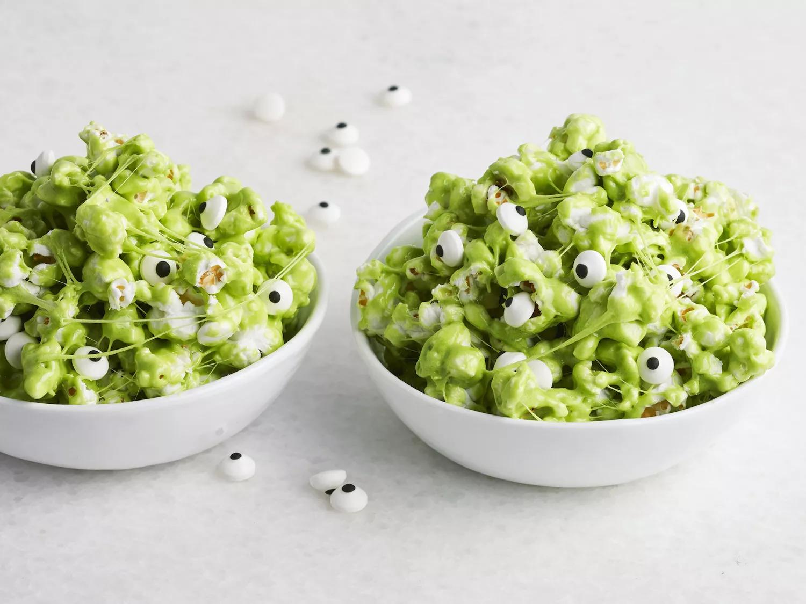

Slime Popcorn

Table of Contents
Description
"Sticky, ooey-gooey marshmallow popcorn is perfect for Halloween," recipe creator Ashlee Marie Prisbrey says. "Just add some green food dye, candy eyeballs, and you have a slime monster!"
Time to make & the amount of servings
10 minutes & 20 servings.
Ingredients
- 10 cups popped popcorn
- ½ cup packed brown sugar
- ¼ cup butter
- 1 (16 ounce) package marshmallows
- 5 drops green food coloring
- 1/2 cup candy eyeballs
Steps
- Pour popcorn into a large bowl.
- Melt brown sugar and butter together in a saucepan over medium heat, stirring often. Stir in marshmallows until melted and smooth. Stir in green food coloring until color is evenly distributed. Pour mixture over popcorn and stir until evenly coated. Sprinkle in candy eyeballs.
Cook's Notes:
One bag of microwave popcorn usually yields 10 to 12 cups.
Candy eyeballs can be found at most party and crafts stores
Nutrition Facts (per serving)
- Calories: 153
- Carbs: 28g
- Fat: 4g
- Protein: 1g
DISCLAIMER:
I am in no way the creator of said recipe that is on this page - this is just a fun project. Thank you to Ashlee Marie Prisbrey for the recipe!
For more recipes, please click this link to refer back to the main page that holds all recipes!